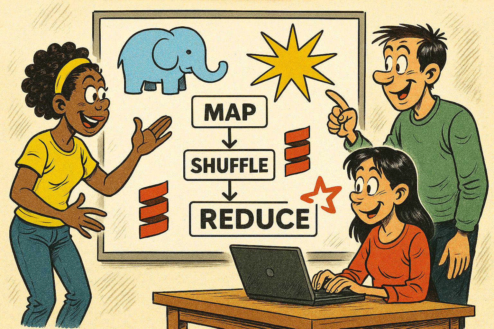

sequenceDiagram
participant D as Driver
participant W0 as Worker 0
participant W1 as Worker 1
rect rgb(230, 245, 255)
Note over D,W1: Registration
W0->>D: Register
W1->>D: Register
D->>W0: AssignId(0)
D->>W1: AssignId(1)
end
rect rgb(255, 245, 230)
Note over D,W1: Stage 1 (Map)
D->>W0: RunTask
D->>W1: RunTask
W0->>D: TaskCompleted
W1->>D: TaskCompleted
end
rect rgb(255, 230, 230)
Note over D,W1: Shuffle
D->>W0: StartShuffle
D->>W1: StartShuffle
W0->>D: ShuffleData
W1->>D: ShuffleData
Note over D: Merge by partition
D->>W0: ShuffleData
D->>W1: ShuffleData
end
rect rgb(230, 255, 230)
Note over D,W1: Stage 2 (Reduce)
D->>W0: RunTask
D->>W1: RunTask
W0->>D: TaskCompleted
W1->>D: TaskCompleted
end
rect rgb(245, 230, 255)
Note over D,W1: Collect
D->>W0: CollectResults
D->>W1: CollectResults
W0->>D: Result
W1->>D: Result
D->>W0: Shutdown
D->>W1: Shutdown
end
Projet MapReduce

1 Introduction
Un framework MapReduce distribué simplifié, inspiré de Apache Spark.
Le pattern MapReduce permet de traiter de grandes quantités de données en parallèle sur plusieurs machines. Idées clés :
- Map : Appliquer une transformation à chaque élément indépendamment (parallélisable)
- Shuffle : Redistribuer les données par clé entre les machines
- Reduce : Agréger les valeurs ayant la même clé
Ce projet implémente une API de type “Dataset” (similaire aux RDD de Spark) avec évaluation paresseuse.
- les données du Dataset sont distribuées sur plusieurs machines. Le Dataset peut potentiellement être plus volumineux que la RAM disponible sur chaque machine.
- les transformations construisent un graphe d’opérations (DAG) qui n’est exécuté que lors d’une action (
collect,count).
2 Objectifs pédagogiques
- Implémenter le pattern MapReduce et le concept de shuffle
- Identifier la pertinence de l’immutabilité pour les calculs massivement distribués
- Maîtriser les bases de ZIO (système d’effets fonctionnel)
3 Installation
Créez ou rejoignez votre équipe avec ce lien GitHub Classroom, puis clonez le projet.
3.1 Commandes utiles
# Compiler
sbt compile
# Lancer les tests
sbt test
# Lancer un test spécifique
sbt "testOnly mapreduce.LocalExecutionSpec"
# Exécution locale du WordCount
sbt "runMain mapreduce.examples.WordCountLocalApp data/input.txt"
# Exécution distribuée (1 JVM, plusieurs workers)
sbt "runMain mapreduce.examples.WordCountDistOneJvmApp data/input.txt 2"4 Architecture
4.1 Structure du projet
src/main/scala/mapreduce/
├── api/
│ └── Dataset.scala # API utilisateur (comme Spark RDD)
├── plan/
│ ├── Op.scala # AST des opérations (DAG)
│ ├── Stage.scala # Regroupement d'opérations
│ └── Planner.scala # Conversion Op -> Stages
├── execution/
│ ├── Driver.scala # Orchestrateur (master)
│ ├── Worker.scala # Exécuteur de tâches
│ └── StageExecutor.scala # Exécution locale d'un stage
├── protocol/
│ └── Messages.scala # Messages Driver <-> Worker
├── serde/
│ └── SocketUtils.scala # Sérialisation réseau
└── examples/ # Exemples : WordCount local et distribué4.2 Architecture Driver-Worker
┌─────────────────┐
│ Driver │
│ (orchestrateur)│
└────────┬────────┘
│
┌────────────────┼────────────────┐
│ │
▼ ▼
┌───────────────────┐ ┌───────────────────┐
│ Worker 0 │ │ Worker 1 │
│ ┌─────┐ ┌─────┐ │ │ ┌─────┐ ┌─────┐ │
│ │ P0 │ │ P2 │ │ │ │ P1 │ │ P3 │ │
│ └─────┘ └─────┘ │ │ └─────┘ └─────┘ │
└───────────────────┘ └───────────────────┘- Driver : Planifie l’exécution, distribue les tâches, coordonne le shuffle
- Worker : Exécute les tâches sur ses partitions de données
- Partitions : Le nombre de partitions (
numPartitions) peut être supérieur au nombre de workers. Chaque worker traite les partitions oùpartitionId % numWorkers == workerId.
4.3 Cycle de vie d’un job
4.4 Le Shuffle (reduceByKey)
Le shuffle est nécessaire quand on doit regrouper des données par clé. Exemple : compter les mots.
Avant shuffle : Chaque worker a des mots arbitraires
Worker 0: [(hello,1), (world,1), (hello,1)]
Worker 1: [(foo,1), (hello,1), (bar,1)]Après shuffle : Chaque worker a toutes les valeurs pour certaines clés
Worker 0: [(hello,1), (hello,1), (hello,1)] → (hello, 3)
Worker 1: [(world,1), (foo,1), (bar,1)] → (world,1), (foo,1), (bar,1)4.4.1 Protocole
- Le Driver envoie
StartShuffleà tous les workers - Chaque worker partitionne ses données par
hash(key) % numPartitions - Chaque worker envoie ses partitions au Driver (
ShuffleData) - Le Driver fusionne : toutes les données destinées au worker N
- Le Driver redistribue à chaque worker sa partition
5 Déroulement du projet
- Groupes de 2 ou 3 personnes
5.1 Déroulement d’une séance
- Lecture du cahier des charges, questions à l’enseignant
- Répartition des tâches (vous pouvez travailler en pair programming)
- Développement, tests, rédaction de la documentation
- Au cours de la séance, votre enseignant invitera votre groupe à un échange de 10-15 mn :
- Il vous posera des questions de compréhension de votre code
- Il répondra à vos questions et pourra vous donner des conseils
- Vous devrez soumettre votre travail (commit & push) avant la fin de la séance.
- pas de travail en dehors des heures de classe, pas de rush pour finir à la dernière minute.
- respect du principe eXtreme Programming Sustainable Pace
- vous devez utiliser le temps disponible efficacement.
- les commits contenant beaucoup de modifications seront considérés comme suspects : fait avec IA ?
- committez souvent
6 Critères d’évaluation
- 50 % - Fonctionnalités implémentées
- est-ce que toutes les fonctionnalités de base sont implémentées ? 25 %
- est-ce que des fonctionnalités bonus sont implémentées ? 25 %
- 20 % - Suivi
- réponses aux questions
- avancement régulier
- 20 % - Qualité du code et organisation
- bugs présents ?
- style fonctionnel
- lisibilité, modularité
- qualité de la documentation (README)
- 10 % - Tests unitaires
- Structure, lisibilité et pertinence des tests,
- couverture avec l’outil de code coverage (cible 80%).
Il est préférable de terminer peu de fonctionnalités, mais avoir un code propre qui fonctionne.
7 Travail à réaliser
7.1 Phase 1 : Warm-up
Implémenter les opérations de base dans Dataset.scala et StageExecutor.scala :
map: transformer chaque élémentflatMap: transformer chaque élément en zéro ou plusieurs élémentsfilter: garder les éléments satisfaisant un prédicatStageExecutor.executeLocal: exécute chaque stage localement
Tests : mapreduce.DatasetSpec et mapreduce.LocalExecutionSpec
7.2 Phase 2 : Shuffle
Implémenter l’opération :
reduceByKey: réduire des couples clé-valeur avec une opération sur les valeurs.
Implémenter le shuffle distribué (médié par le Driver) :
Worker.handleWorkerMessage: gérerStartShuffleetShuffleDataDriver.coordinateShuffle: orchestrer le shuffle
Tests : mapreduce.ShuffleSpec et mapreduce.DistributedSpec.
Conseil : Ecrire un test pour la fusion de partitions.
7.2.1 Validation sur un fichier public
Télécharger un livre de Project Gutenberg pour tester WordCount sur un vrai fichier :
# Download several large books and combine
curl -O https://www.gutenberg.org/files/100/100-0.txt # Shakespeare (~5MB)
for i in {1..10}; do cat 100-0.txt >> large-test-file.txt; doneLancer WordCount et vérifier les résultats attendus.
| Mot | Occurrences attendues |
|---|---|
| the | ~303000 |
| and | ~285000 |
| you | ~146000 |
| that | ~122000 |
| not | ~90000 |
Dans le fichier README.md, notez les temps d’exécution pour :
- le mode local :
WordCountLocalApp - le mode distribué avec 2 puis 4 workers :
WordCountDistributed - BONUS : le mode distribué sur plusieurs machines
- choisissez le nombre de workers en fonction du nombre de cores des CPUs
- Par exemple : PC_A a 8 cores, PC_B a 12 cores => lancer max 6 workers sur PC_A, max 11 workers sur PC_B (on laisse 1 core pour le système et 1 pour le Driver)
Vous pouvez utiliser les logs ou modifier le code pour mesurer le temps total entre "All ... workers connected" et "Found ... unique words".
7.3 Phase 3 : Job MovieLens
Télécharger le dataset MovieLens (ml-latest-small) :
Fichiers utilisés :
movies.csv: movieId, title, genres (genres séparés par|)ratings.csv: userId, movieId, rating, timestamp
Objectif : Calculer la note moyenne par genre.
Vous avez deux possibilités pour implémenter le join enter les deux fichiers.
7.3.1 Solution A : Broadcast join (plus simple)
Charger le petit fichier (movies.csv) en mémoire dans une Map, puis enrichir le grand fichier :
// Charger movies en mémoire (petit fichier)
val moviesMap: Map[Int, String] = Source.fromFile("movies.csv")
.getLines().drop(1) // skip header
.map(line => /* parse to (movieId, genres) */)
.toMap
// Utiliser map pour enrichir ratings avec les genres
Dataset.fromTextFile("ratings.csv")
.map(line => /* parse to (movieId, rating), use moviesMap to get genres */)
// ... 7.3.2 Solution B : Distributed join (avancé)
Implémenter une vraie opération join distribuée :
À implémenter (Dataset.scala, Op.scala, Planner.scala) :
Op.Join[K, V, W]avec deux upstreams (le DAG devient un arbre)- Mise à jour du Planner pour gérer les branches multiples
joindans l’API :Dataset[(K, V)].join(other: Dataset[(K, W)]): Dataset[(K, (V, W))]
Astuce : Shuffler les deux datasets par clé, puis combiner les partitions localement.
7.3.3 Bonus
Quels sont les 10 films les mieux notés (avec au moins 50 notes) ?
7.4 Phase 4 : Questions de réflexion
Chargement des sources : Regardez
Worker.getInput. Chaque worker charge le fichier entier puis filtre sa partition. Pourquoi est-ce inefficace ? Comment un système réel comme Spark gère-t-il cela ?Shuffle peer-to-peer : Notre shuffle passe par le Driver (goulot d’étranglement). Comment implémenter un shuffle direct entre Workers ?
Optimisation de count() : Regardez
Dataset.count(). L’implémentation actuelle appellecollect().map(_.size), ce qui rapatrie toutes les données avant de compter. Comment optimiser cette action pour ne transférer que les comptages partiels ?
- écrivez vos réponses dans README.md
- implémentez l’une des 3 optimisations
- comparez les performances avant/après optimisation
7.5 Ressources
- ZIO Cheat Sheet.md : Patterns ZIO utilisés dans ce projet
- Spark RDD Programming Guide : Documentation Spark pour référence